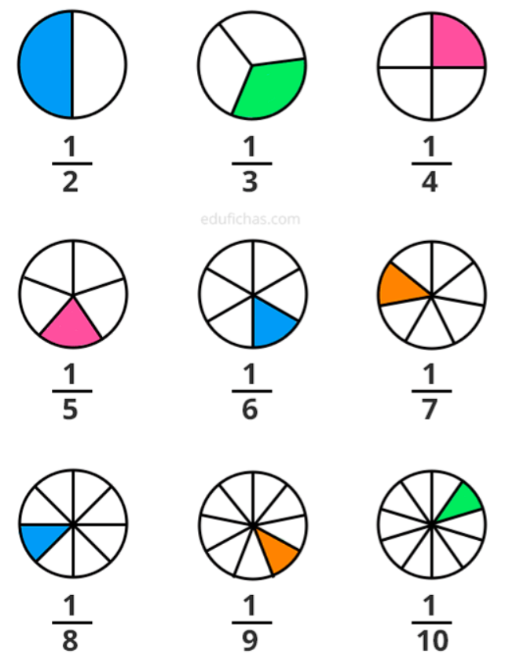
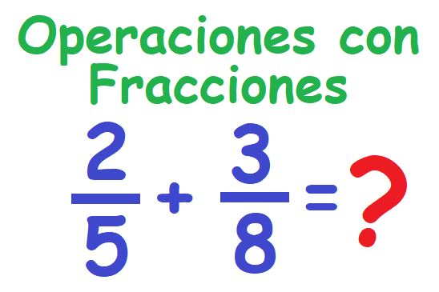

Fracciones y sus Operaciones
Explicación de las fracciones, cómo operarlas, etc.
 ¿Qué son las fracciones?
Una fracción representa una parte de un todo. Se compone de un numerador y un denominador.
Operaciones con Fracciones
Suma de Fracciones
Para sumar fracciones con el mismo denominador: a/c + b/c = (a + b)/c
Resta de Fracciones
Para restar fracciones con el mismo denominador: a/c - b/c = (a - b)/c
Multiplicación de Fracciones
Para multiplicar fracciones: a/b * c/d = (a * c)/(b * d)

División de Fracciones
Para dividir fracciones: a/b ÷ c/d = (a * d)/(b * c)